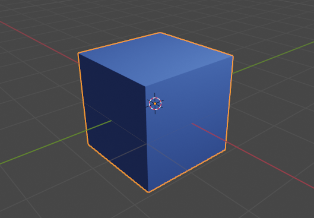

Manual
Supported Asset file formats
| Usage | Supported Formats | Note |
|---|---|---|
| Code | .lua |
The main script (entry point) must be called main.lua |
| Texture | .png, .jpg |
Image formats to load with yg.asset.loadTexture() |
| Texture Atlas | .json |
See Texture Atlases (Sprite Sheets) |
| Audio | .ogg |
Audio format to load with yg.audio.storeFile() |
| 3D Model | .obj |
See 3D Models and Materials |
| Material | .mtl |
See 3D Models and Materials |
| GLSL Shaders | .vert, .frag |
Naming convention. See GLSL Shaders |
File access
Whenever loading a file from assets/, a// has to be prepended to the actual filename. Example: "a//sprites.png"
Texture Atlases (Sprite Sheets)
Packed texture atlases created with the tool Free Texture Packer (FTP) are supported and can be loaded with yg.asset.loadTexture().
Tested with Free Texture Packer v0.6.7.
The following FTP settings are required. The rest can be set to users taste.
- Format:
JSON (hash)orJSON (array) - Allow rotation:
No - Allow trim:
No - Padding:
>= 2(recommended)
Accessing Sprites and Sequences
- get named sprite always with yg.gl.Texture.getCoords()
- get sequence frame sprite with yg.gl.Texture.getFrameCoords()
matches sprite names that have indexes at the end (with - or _),
like walking_01, or walking-01, but NOT: walking01
ToDo: link from these functions back to here
Sky images
Drawing Sky is not yet supported, but will be soon.
To draw sky in the scene, an image with equirectangular projection (aspect ratio 2:1) is used. These are images that typically 360-degree cameras generate.
ToDo: Photo example
ToDo: Gradient/Horizon example
ToDo: Sprite example
This tool can be used to produce compatible sky images from 2D sprites:
3D Models and Materials
Object (.obj) and Material (.mtl) support
3D models in .obj format can be loaded by yourgame, optionally together with a material template library .mtl.
This is what yourgame does:
- Vertices are made unique
- Example: If multiple faces contain the same vertex position, but different normals,
yourgameclones the position data and creates individual vertices with different normals - This preserves edges during rendering
- For model parts where smooth shading is desired, adjacent faces must share identical vertices, meaning the face normals must be averaged
- More details: Smooth vs. Flat Shading
- Example: If multiple faces contain the same vertex position, but different normals,
- The diffuse color
Kdfrom Material (.mtl) is provided as color input to the vertex shader- This way,
Vertex Color Shadingcan be performed - See GLSL Shaders on how to use vertex color in Shaders
- This way,
Smooth vs. Flat Shading
ToDo: show how this Blender option is reflected in yourgame
Create with Blender
Geometry can be created and exported with Blender, in .obj format with limited Material (.mtl) support.
Tested with Blender v3.4.1.
Here is a basic workflow, some Blender knowledge is required.

Select all parts of your model and export it with the Wavefront (.obj) (legacy) exporter and the recommended settings below.
- ToDo: explain settings below, mention/test Forward/Up, etc.
The generic Principled BSDF Shader has an impact on the exported .mtl. If you want to use it, apply this Shader to your model (or different parts of your model):
- Principled BSDF
Base Coloris exported asKd(diffuse color) into the Material (.mtl)- The
Base Colorin the example Shader below causes thisKdentry in the exported.mtlfile:Kd 0.102684 0.235477 1.000000
- The
See Object (.obj) and Material (.mtl) support on how this information can be used in yourgame.

Other Tools and 3D Assets
Of course, other 3D tools can be used to generate yourgame compatible data. Also, some .obj based 3D game assets, made by Kenney, can be imported directly without modification.
GLSL Shaders
Attributes Conventions
| Usage | Type | Location | GLSL Vertex Shader Code |
|---|---|---|---|
| Position | vec3 | 0 | layout(location = 0) in vec3 inPosition; |
| Normal | vec3 | 1 | layout(location = 1) in vec3 inNormal; |
| Texcoords | vec2 | 2 | layout(location = 2) in vec2 inTexcoords; |
| Color | vec3 | 3 | layout(location = 3) in vec3 inColor; |
Uniforms Conventions
| Usage | Type | Name | GLSL Shader Code |
|---|---|---|---|
| MVP Matrix | mat4 | mvpMat |
uniform mat4 mvpMat; |
| VP Matrix | mat4 | vpMat |
uniform mat4 vpMat; |
| Model Matrix | mat4 | modelMat |
uniform mat4 modelMat; |
| Normal Matrix | mat3 | normalMat |
uniform mat3 normalMat; |
| Camera Position | vec3 | camPos |
uniform vec3 camPos; |
| Camera Trafo | mat4 | camTrafo |
uniform mat4 camTrafo; |
| Sky Rotation Inverse | mat3 | skyRotInv |
uniform mat3 skyRotInv; |
| Texture Diffuse | sampler2D | textureDiffuse |
uniform sampler2D textureDiffuse; |
| Texture Sky | samplerCube | textureSky |
uniform samplerCube textureSky; |
| Light Ambient | vec3 | lightAmbient |
uniform vec3 lightAmbient; |
| Light Diffuse | vec3 | lightDiffuse |
uniform vec3 lightDiffuse; |
| Light Specular | vec3 | lightSpecular |
uniform vec3 lightSpecular; |
| Light Position | vec3 | lightPosition |
uniform vec3 lightPosition; |
| Subtexture Coordinates | vec4 | subtex |
uniform vec4 subtex; |